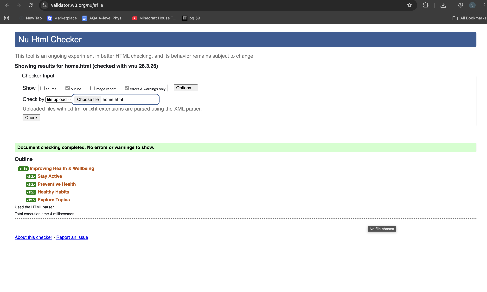
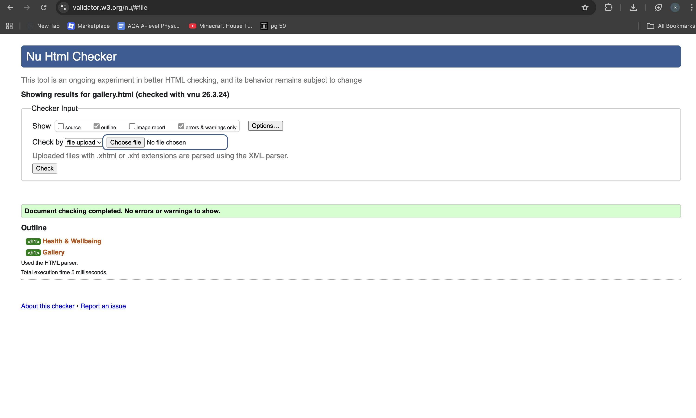

Validation Page
Home Page Validation
The Home Page was validated using the W3C validator. No errors were found.

Gallery Page Validation
The Gallery Page successfully passed validation. Minor warnings were reviewed but did not affect functionality.

Content Page Validation
The Content Page was validated and no errors were identified. The page uses semantic HTML elements correctly.

Reflection on Validation
During validation, some initial errors were found such as missing alt attributes and incorrect nesting of HTML elements. These were resolved by carefully reviewing the structure and ensuring all tags were properly closed.
This process helped improve my understanding of HTML standards and highlighted the importance of writing clean, well-structured code. It also reinforced the need for accessibility features such as alt text.